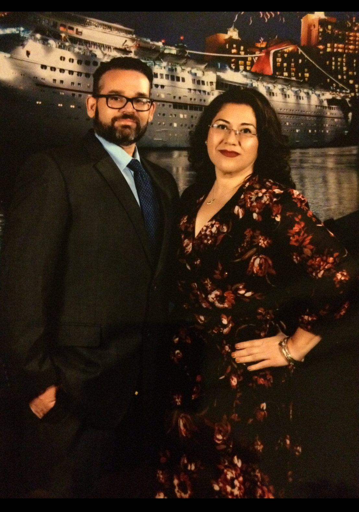

Top of page

Dolivia
Doug and Olivia(the couple known as Dolivia) love to cruise! Unfortunately, their cruising dreams are currently on pause due to the Covid-19 Pandemic. It's ok thought. As much as they love being on a ship, they can't picture it being much fun being stuck on a ship under a long quarantine. They are, of course, hopeful that the cruising industry will survive and they'll be able to resume cruising sometime in the future. Until then, let's help them relive those happy moments aboard a ship.
About Cruising
Before digging into the couple's cruising adventure, lets review some basic cruising information for those
who
haven't had the joy of traveling by sea.
(Click here if you're only
interested in reading about the couple's cruising adventure and want to skip this long informative
section.) It is
unkown how many
cruises Doug has been
on, but
he's what one would call a seasoned cruiser. He started
cruising way before they met, and by now has earned Gold VFIP status with
Carnival Cruise Lines. Since Olivia has only been on two cruises, her status is stuck on red.
Olivia's first cruise took place in the Carnival Immagination ship which sailed out of Long Beach, CA. It
lasted
four
days. The second cruise lasted 5 days and took place on Carnival's Dream ship sailing out of
Galveston,
TX. This ship was bigger and had a few more ammenities.
Her are a couple short youtube videos with tours of each of the ships.
Carnival Immagination
Carnival Dream
In case you haven't heard by now, Carnival Imagination was removed from the Carnival fleet roster earlier this year. The ship's last known whereabouts is Aliaga, Turkey where it is being scrapped. If you've ever wondered where ships go to die, here is a short newsclip with plenty of info. Warning, due to the graphic nature of this story, viewer discretion is advised. Ship Graveyard
Have you heard heard someone say that cruise ships are like small floating cities? Think about it, they
have theaters, gyms, spas, restaurants, mini-golf, pools, water parks, dance clubs, tons of bars, a
casino, etc...
Plus they host a lot of fun activities, so there is almost always something to do or see. If you are onboard
on Halloween, be ready to get dressed up.


Now, for those that are prone to seasickness, you can leave those worries behind. These ships are built with stabilizers, so most of the time you can't even tell you're at sea. Most of the time.
In terms of cost, when you take into consideration all that is included with the cost of a cruise: the room, food, entertainment, etc., it is actually affordable for many people. Cruise lines also offer payment plans so you don't have to pay for it all at once. Here's a short list of some of the things that are typically included:
- plenty of places to relax and get some sun
- great service
- room service
- good food and a variety of eating options and locations
- great entertainment shows day and night
- plenty of bars and clubs
- pools
- adult only lounge
- casino
- shopping
- beauty salon
- gym and spa
- great room service and cute little towel animals every time they make your bed
In regards to food, cruisers have the option of eating at the buffet, or dining room. No matter where you eat, there's always a variety of dishes to choose from. For those who want an actual restaurant experice with a full course meal, eating at the dining room is the best choice. The service is great, and the menu changes everyday. They even offer exotic food choices such as alligator, frog legs, escargot, etc. So, there's plenty of opportunities to try something new.
- non-bottled water
- lemonade
- hot or iced tea
- hot cocoa
- regular coffee
Carnival offers an all-inclusive Cheers beverage program which lets you enjoy a variety of alcoholic & non-alcoholic drinks at a fixed cost. A beverage program is a great idea for someone who plans on consuming alcoholic and specialty non-alcoholic drinks throughout the cruise without worrying about ending up with a huge bill afterwards. These were just a few things to consider if have never cruised before and are ready to discover the world of cruising. Once it's safe to cruise again, of course.
Happy Days at Sea
When Doug was planning Olivia's first cruise, he had to decide how long they should sail for and which port to sail out of. Since it was Olivia's first cruise and they didn't know if she would get sea sick or if she would even like being on a ship, he opted for a short 4 day cruise. It appears to have been the right choice. Olivia had so much fun, and for a newbie the 4 days at sea felt just about right. Sailing out of California was also a great idea; it gave them the chance to visit Los Angeles, San Diego, Las Vegas, and Tijuana, Mexico. As you can imagine, the second half of their trip involved A LOT of driving. We'll have to cover their road adventure in another blog. For now, let's dive in to their high-seas adventure.
Remember the Cheers beverage package mentioned in the previous section? (Click here if
you had skipped
it and now you're curious.)
Well, Olivia decided to take advantage of the program and as a result, was able to consume a high volume
of cocktails she had never tried before. And she found it... the perfect drink which instantly became
her all-time
favorite: the chocolatini. If you
like chocolate and have never tried a chocolate martini, aka chocolatini, you must! Just don't drink
too
many at once
because you
can't taste the alcohol, but trust me, it's there!
Dolivia thought the quality of the shows and entertainment were very good. They were able to go to all the stage shows and even stayed up past their bedtime to hang out at the late night adult comedy club. These were some of the funniest comedians they had ever seen. (I bet the Cheers beverage program had something to do with this.) Overall, they had a blast. In their reviews, Dolivia gave Carnival an A+ in the entertainment category.
While planning their vacation, one of the couple's goals was to visit another country, and they agreed that traveling by ship was a better option than taking a plane. Why not have a vacation while traveling to another vacation. You can't really vacation while flying on a plane, can you? Ok, let's move on and find out what places they were able to visit.
Baja, Mexico
1st stop: Beautiful Catalina Island

Catalina is a small island about 22 miles from Los Angeles. Dolivia spent the day in the town of Avalon,
mostly
shopping and hanging out at a the beach. Since Olivia was raised in California, she went to the beach
A LOT,
and
to this day, it's the one thing she truly misses about living in California. The water, the sand, the
sun, the palmtrees, you get the idea.
So, for her, being able to spend
time at this tiny beach in Catalina Island was the highlight of this excursion.
2nd stop: Ensenada, Baja California
Ensenada is popular seaport town in Baja California, Mexico. It is located approximately 80 miles south of San Diego, California, and is a popular tourist destination. There's a lot to do and see there, so Dolivia decided to join a City and Shopping Tour. The tour guide spoke very good English, and very informative. So, what did we get to see and do? Actually, quite a bit.
They toured the historic Riviera Cultural Center. I had actually never heard of this place. According to the tour guide, this place was built in the late 20's to early 30's and was originally known as the Playa Ensenada Hotel & Casino. Apparently, it was very popular among the USA rich and famous who used to travel to Ensenada to drink and party during the Prohibition. Unfotunately things went downhill around the mid 30's once gambling became illegal in Mexico. There is a lot of interesting history and beautiful architecture; there's even a map of all the Spanish Missions. As a cool treat, the tour concludes with a visit to the Andaluz bar, which is located inside the building. Everyone got to sample a free and delicious margarita drink. Delicioso!
According to the tour guide, the world famous Margarita cocktail was invented in this bar in honor of Marjorie King. However, the origin of the margarita is a bit of a mystery. From what I've recently read, there are many people/bars claiming credit for inventing the Margarita. If you are curious about the cocktail's possible origin, check out these links and let me know what you think.
The mystery of who realy created the MargaritaTwo bars claim credit for creating the Margarita
The tour wasn't over, the next stop was at Bodegas de Santo Tomas for a sampling of their wines, while also enjoying a spread of cheeses, bread, and olive oils. Delicioso!
A note about purchasing alcohol ashore. You are required to turn it in to the cruise line; they will hold it for you and you get to pick it up during debarkation. So, purchasing alcohol ashore to drink back on the ship won't work. However, that probably won't matter much to someone who has the Cheers beverage program because they get to drink whatever they want as soon as they get back to the ship.
In search of the best Fish Taco.
Have you ever tried a baja-style fish taco? If not, you are missing out. They are delicious and my
all-time
favorite
type of
taco. For many people, once they try their first fish taco, they are hooked.
Similarly to the Margarita, Ensenada also claims to be the home of the original fish taco. So, anyone that is a fish taco fan, this is the place to feast. Since there are so many places in Ensenada that sell fish tacos, it's hard to decide which place to stop at. Instead of shopping during their tour, Dolivia decided to have a walking adventure, which led them to La Marina area, near the Mercado Negro Fish Market. They figured that the restaurants surrounding the fish market would probably be using fresh fish from the neighboring market for their tacos. After so many options, they chose a place called Tacos Ensenada. The tacos and salsas served at this tiny corner taqueria were delicious. If you would like to see the part of town they were at, click on the Mercado Negro link above. You can actually see the corner taco spot the couple ate at. Fun times!
Western Caribbean
1st stop: Cozumel, Mexico
Enjoying the beach at Mr Sancho's Beach Club.
You see, Olivia is a workaholic. In the last couple of years, she's been working 2 jobs, averaging 60-70 hours per week. Since she's always on the go and gets very little rest, the thing that she craves the most in a vacation is relaxation. She needs and wants time to recover, and give her mind, body and soul the break it needs. So, when Doug suggested skipping the exhausting activities for a day and instead spend time relaxing at the beach, she was all in.
Mr Sancho's was exactly the right place for her to be in; beautiful clear ocean water, comfy warm sand, plus all-you-can eat and drink. What else could one ask for? A massage you say? They have that too. Yes, there were a lot of people there, and some areas were a bit on the crowded side. However, Dolivia got there early and landed a spot on a side of the beach that wasn't crowded. It was so relaxing; just sitting, eating, drinking, swimming, laying out in the sand. Exactly what Olivia needed!
2nd stop: Progreso, Yucatan, Mexico
Exploring the Uxmal Mayan Ruins.
Olivia was born in Mexico, and came to the US as a young child. She has only been able to travel back there on very few occasions. So, she was super excited to visit an actual ancient city and learn about her culture. The pyramids, architecture, carvings, ceremonial sites, ball court, and even the iguanas; she loved seeing a side of Mexico she had never seen before. This was way better than reading about it in a book or visting a museum.


Back up to the top of the page